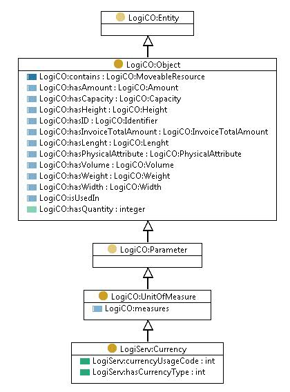

http://ontology.tno.nl/logiserv#Currency
Class LogiServ:Currency

LogiServ:mappingToEDI
http://www.unece.org/fileadmin/DAM/trade/untdid/d12b/tred/tred6345.htm
rdf:type
owl:Class
rdfs:comment
UN/EDIFACT D.12B Data Element 6345 Currency identification code Desc: Code specifying a monetary unit.
rdfs:subClassOf
LogiCO:UnitOfMeasure
References
as rdfs:domain (
LogiServ:hasCurrencyType
,
LogiServ:currencyUsageCode
)
as rdfs:range (LogiServ:hasCurrency)
as rdfs:subClassOf (LogiCO:Currency)
Generated with
TopBraid Composer
by
TopQuadrant, Inc.